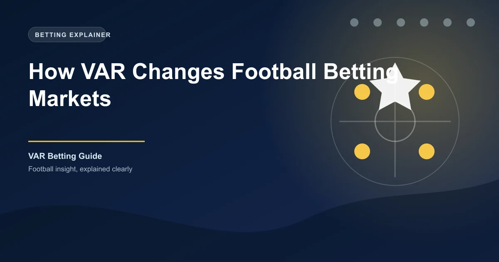

The introduction of the Video Assistant Referee (VAR) has fundamentally changed how football matches are officiated and, consequently, how they are bet on. Since its widespread adoption across Europe's top leagues, VAR has introduced a new layer of uncertainty that savvy bettors can exploit. Goals are being overturned, penalties are being awarded after delays, and match outcomes are being decided by decisions that would have stood pre-VAR. Understanding the VAR factor is now essential for any serious football bettor.
In this comprehensive guide, we will examine how VAR has statistically impacted football betting markets, explore the specific areas where VAR decisions change match outcomes, and provide practical strategies for accounting for VAR uncertainty in your betting approach.
Since VAR was introduced, the numbers paint a clear picture of its influence on the game. Across Europe's top five leagues, VAR has been involved in a significant number of match-changing decisions every season. The key statistics that matter for bettors include:
In the Premier League, VAR has historically overturned approximately 20-25% of on-field goals per season. That is a significant number when you consider that a single goal can determine the outcome of a match and completely reshape a betting market.
VAR introduces a unique form of uncertainty into pre-match betting that did not exist before its implementation. Before a ball is even kicked, bettors must now consider the possibility that key decisions will be reviewed and potentially reversed during the match.
The 1X2 market is affected by VAR in several ways. When two closely matched teams play, VAR decisions can swing the result in either direction. Studies have shown that certain teams benefit from VAR decisions more than others, often due to factors like playing style, tactical approach, and the tendency to make challenges in the penalty area. Teams that press aggressively high up the pitch tend to concede more penalties through VAR reviews, while teams that sit deep and defend may benefit from offside calls being overturned in their favour.
The over/under goals markets are particularly sensitive to VAR. When a goal is disallowed after review, it directly impacts over bets. Consider a scenario where a match has two goals scored in the first half, both of which are confirmed after VAR checks. If you have backed Over 2.5 goals, the delayed confirmation creates additional anxiety. But imagine one of those goals is then overturned, leaving you with just one confirmed goal. VAR has effectively cost you a winning bet.
A team scores in the 35th minute to make it 1-0. The celebrations are cut short as the referee walks to the pitchside monitor. After a two-minute review, the goal is disallowed for a marginal offside in the build-up. The score remains 0-0. If you had backed Over 1.5 goals at half-time, that VAR decision just destroyed your bet. This scenario plays out regularly across European football every weekend.
VAR creates additional variance in Asian handicap markets. A team that is -1.0 favourite may see their handicap covered comfortably if a goal is allowed, but completely blown if that same goal is disallowed. The uncertainty of VAR reviews means that handicap bettors face an additional layer of risk that was not present before 2018.
The impact of VAR on live or in-play betting is where the most significant changes have occurred. Live betting markets must now account for the possibility that any goal, penalty, or red card decision may be under review.
When a VAR review is taking place, bookmakers suspend the relevant live markets. This creates gaps in betting availability that did not exist before. If you are a live bettor who relies on momentum and quick reactions, VAR reviews disrupt the flow of in-play betting. Goals that are scored and then go to review leave bettors in limbo, unable to place or cash out bets until a decision is reached.
During a VAR review, the odds on the live market can fluctuate wildly. If a goal is initially awarded, the odds for the scoring team will shorten dramatically. But if there is a possibility it might be overturned, cautious bookmakers may only partially adjust the odds. This creates a window of opportunity for bettors who can accurately assess the likelihood of the decision being overturned.
During a VAR review, pay close attention to the body language of the referee and the replays shown on screen. If the referee goes to the monitor quickly and the replay shows a clear infraction, the decision is likely to be overturned. If the referee spends a long time reviewing multiple angles, the original decision often stands. Use this information to make informed live betting decisions.
VAR reviews typically take between 1 and 4 minutes. During this time, the momentum of a match can shift dramatically. A team that has just scored and is riding a wave of confidence may lose their momentum during the review if the goal is disallowed. Conversely, a team that conceded may come out of the review period with renewed determination if the goal is chalked off. This momentum shift is a factor that live bettors can exploit.
One of the most actionable areas for bettors is understanding how VAR impacts the under/over goals markets. The key insight is that VAR introduces additional randomness into goal scoring, which can create value in certain situations.
Because VAR can disallow goals that were initially awarded, there is an argument that the true number of goals in a match is slightly lower than what raw goal tallies suggest. If a league has a high rate of goals being overturned by VAR, then backing the under in certain matches could offer value because the market may not fully account for the likelihood of goals being disallowed.
Conversely, the increase in penalties awarded by VAR can boost the over markets. Penalties are high-probability scoring opportunities, and the additional penalties that VAR catches add goals to matches that would not have existed in the pre-VAR era. Leagues with high VAR penalty rates may see a slight increase in average goals per match, creating value in over bets.
Analyze VAR statistics for specific leagues and competitions. Some leagues have higher rates of goals being overturned, while others have higher rates of penalties being awarded. Use this data to identify whether the under or over offers more value in a particular league. For example, if a league has a high rate of goals overturned but a low rate of additional penalties, the under may be slightly undervalued.
Research has revealed that VAR decisions are not entirely random across all teams and venues. Some patterns have emerged that can be leveraged for betting purposes.
Some studies suggest that home teams may benefit slightly more from VAR decisions than away teams, possibly due to the psychological pressure on referees or the tendency of home teams to dominate possession in attacking areas. While the evidence is not conclusive, it is a factor worth monitoring in your betting analysis.
Certain playing styles are more likely to generate VAR-influenced decisions:
Now that we have covered the theoretical impact of VAR on betting markets, here are practical strategies you can implement to gain an edge.
Different VAR officials have different tendencies when it comes to overturning on-field decisions. Some VAR officials are more interventionist, while others tend to support the on-field referee's original call. While this data is not always publicly available, tracking patterns over time can reveal useful tendencies.
When backing a team live after they score, always factor in the possibility of a VAR review. If the goal involved a close offside decision, a handball check, or a foul in the build-up, the probability of the goal being overturned is higher. Adjust your live bets accordingly and do not assume a goal is confirmed until the referee signals it.
Correct score betting is one of the hardest markets to profit in, but VAR can create opportunities. If you identify matches where VAR is likely to be influential, such as matches between teams with contrasting styles or matches involving teams with high offside rates, you can factor this into your correct score predictions.
VAR decisions that occur just before half-time can dramatically impact half-time full-time bets. A goal disallowed in stoppage time of the first half changes the half-time score and can invalidate an HT/FT bet. Consider this risk when placing such bets, particularly in matches where VAR reviews are likely.
VAR introduces genuine randomness that is impossible to predict with certainty. No amount of analysis can tell you exactly when a goal will be disallowed or a penalty awarded. Always manage your bankroll carefully and do not bet more than you can afford to lose, particularly in markets where VAR can swing outcomes.
VAR technology continues to evolve. Semi-automated offside technology has been introduced to reduce the time taken for offside decisions, and improvements in camera technology are making reviews more accurate. As the technology improves, the rate of correct decisions should increase, which may reduce the impact of VAR on betting markets over time.
However, as long as subjective decisions remain part of football, VAR will continue to introduce uncertainty into matches. The key for bettors is to stay informed about how VAR is being used in different leagues and competitions, track the statistics, and adjust your betting strategies accordingly.
VAR is not going away, and neither is its impact on betting markets. The bettors who understand how VAR influences match outcomes, market movements, and decision patterns will have a significant edge over those who ignore it. Use VAR data as part of your broader analytical toolkit, and you will be better positioned to find value in the modern betting landscape.
Get predictions that account for VAR and other match variables across major leagues.
View In-Play Predictions Win
Win